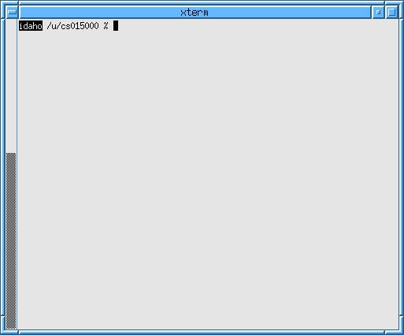
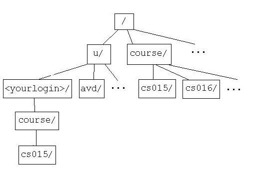
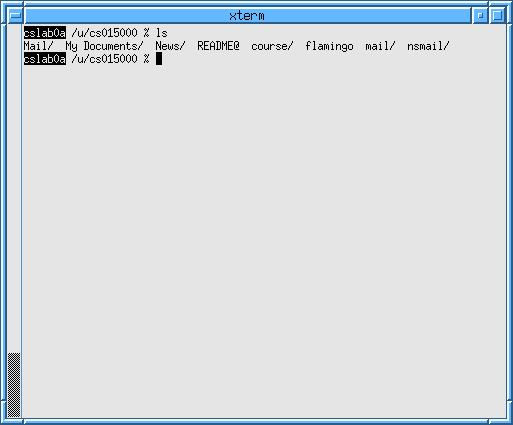
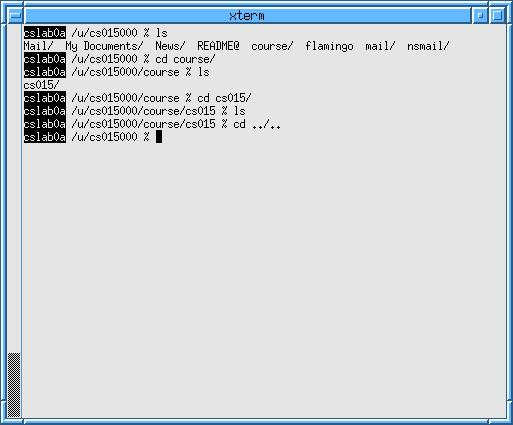
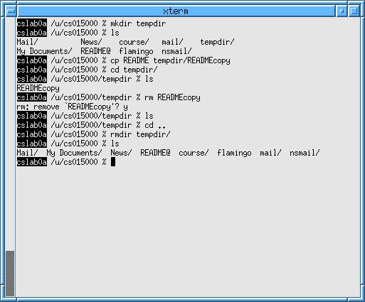

|
|
PREVIOUS Desktop |
NEXT Mail, Internet, and More |
|
|
|
PREVIOUS Desktop |
NEXT Mail, Internet, and More |
|
As we mentioned earlier, the shell is your primary mode of communication with the computer. Almost anything you want to do will involve inputting commands into the shell.
Note that everything we say here about shells applies to your console as well. As mentioned before, the console is just another shell, but you should only have one console at any given time, as the console is responsible for displaying messages from the system.

The first time you log in, you have to change your password. Think of a new password. Try to include numbers, punctuation, or capital and lower case letters. If your password is deemed too simple by Linux, you will have to pick another.
 Type
Type passwd
in a shell and hit 'enter.'
You will get a prompt that looks like this (you may have to wait a few seconds):
Changing account information for <YourLoginNameHere> on
godzilla.
Please enter old password:
 Enter your old password
(the one you just logged on with). NOTE: Your password
will not be echoed in any way (no dots or asterisks). If you
make a mistake, you can try to hit "ctrl-u," which will
clear everything you have typed.
(No, backspace won't work here. It works in other places. To learn
how to deal with Linux's crazy deleting, see the Linux
Hints in the Appendix.)
Otherwise, let it fail and re-enter
Enter your old password
(the one you just logged on with). NOTE: Your password
will not be echoed in any way (no dots or asterisks). If you
make a mistake, you can try to hit "ctrl-u," which will
clear everything you have typed.
(No, backspace won't work here. It works in other places. To learn
how to deal with Linux's crazy deleting, see the Linux
Hints in the Appendix.)
Otherwise, let it fail and re-enter passwd
to try again.
You will then be asked for your new password:
Please enter new password:
 Enter the new password you
thought up.
Enter the new password you
thought up.
Please retype new password:
 Re-enter the new password.
Re-enter the new password.
The system will now determine whether you have selected a good enough password. If you have, you will receive a message like:
The NIS password has been changed on godzilla.
If the change failed, you will receive some explanation, like:
Mismatch – password unchanged
If the change failed, re-enter passwd to try again.
For CS15, there is a little setup that has to be done to your account. To take care of this, we have written a special kind of program called a script that you must run.
 In a shell, type
In a shell, type cs015_setup
and press 'enter.'
You should get a message that the directory
course/cs015 has been created in your
home directory. If you receive any kind of error message, see
a TA immediately.
For section, you are going to need to set up an SSH key pair. (For more info on SSH, see the department's remote access page. For now, just follow these steps and don't worry about the details.)
 In a shell, type
In a shell, type ssh-keygen -t dsa and
press enter.
You should see the message:
Generating public/private dsa key pair.
There will be a pause, which may last a few seconds, followed by the prompt:
Enter file in which to save the key (/u/<yourlogin>/.ssh/id_dsa):
 Press enter without typing anything.
Press enter without typing anything.
You will then be prompted to enter a passphrase. This is like a password for when you use SSH to access a computer remotely. Think up a new passphrase. This passphrase MUST be different from your password to log in to the computers!
 Type the passphrase you thought up and press enter. When prompted,
confirm your passphrase.
Type the passphrase you thought up and press enter. When prompted,
confirm your passphrase.
Your SSH key is now created, but it is not in the right place.
 Type
Type
cat ~/.ssh/id_dsa.pub >>! ~/.ssh/authorized_keys
in a shell and press enter.
You are now all set with SSH.
All of the computers on the CS department's network use a "shared file system" called NFS (Network File System). That means that no matter what computer you log into in the department, you will have access to all the same files. This might sound really scary, but it is functionally the same as on any other computer. Data is contained in files, and files are organized with directories. The files and directories are located in a "tree," like in Windows or Mac OS, with each directory containing subdirectories or files (or both, or nothing).
In Linux,
directories are separated by '/,' and the root directory that contains
all other directories is also called '/.' The chain of directories and
slashes
that describe a particular directory or file
is called the directory or file's path. (For example,
/u/avd/README
is a file called "README" in the "avd" directory, which is in
the "u" directory, which is in the "/" directory [whew].) A path that
begins from the root directory ( / ) is called a
fully-specified path because it leaves no ambiguity as to
the file or directory's location.

Each user gets his/her own "home directory." All of the home
directories are located in a directory called "u." So, your home
directory is
located in /u/<yourlogin>/. Since you use your home directory
so much, it can be abbreviated to '~'. Meaning,
you can write interchangeably:
'/u/<yourlogin>/'
or '~'.
Your shell is pretty closely linked to the file system. Every shell has a current directory. You can think of this as your location within the file system. (You cannot be within a file.) A shell's current directory is displayed on the prompt. So, when you have a prompt that looks like:
cslab4g /u/<your login> %
It means that you are on computer "cslab4g" and you current directory is your home directory (The '%' is just to indicate where you type.). If the prompt looked like:
cslab4g /course/cs015/bin %
You would be in the bin directory of the cs015 course directory.
There are a bunch of important commands for navigating the file system. We are going to show you some of the most common here, but take a look at the Appendix for a full listing.
As noted above, you can usually figure out what directory
you're in simply by looking at the prompt in your shell. But what
about the contents of the directory? The command
ls (short for list) will
show you the contents of the current directory.
 Type
Type ls in a shell and press 'enter.'
You should see something similar to this (probably not exactly the same files and directories):

This shows the home directory of the CS15 test account. It is a little
cluttered since it has been around awhile. It contains the directories
Mail, News, course, mail, My Documents, and
nsmail; and the files
README and flamingo.
Notice that some names are followed by a '/.'
This '/' marks a directory.
Thus, in the picture above,
course is a directory, but
README is not.
The command cd <dir> will move you to a different
directory.
 Type
Type cd course in a shell and
press 'enter.'
Your prompt should now indicate that your current directory
is /u/<yourlogin>/course.
 Type
Type ls and press 'enter.'
You should see a cs015/ directory in the course
directory. That is where you will be doing all of your
work for CS15.
 Type
Type cd cs015 and press 'enter.'
 Type
Type ls and press 'enter.'
You are now in your course/cs015 directory, and your call
to ls should have shown you that the directory is empty.
The symbol '..' represents the directory above your
current one. So, if you want to move up one directory, you would enter
'cd ..'.
 Type
Type cd ../.. and press 'enter.'
This brought you to the parent of your current directory's parent,
or back to your home directory. (As a shortcut,
cd with no directory specified will also bring you
back to your home directory.)
Right now, your shell should look something like this:

If your shell looks different, or if you are in a directory other than
your home directory, figure out your mistake and then type
cd and press enter to return your home directory.
If you couldn't change the file system, it would be pretty useless.
The command mkdir <dirname> allows you to create
new directories.
 In your home directory (in a shell that only has
In your home directory (in a shell that only has /u/<yourlogin>
for the current dir), type mkdir tempdir
and press 'enter.'
If you ls your home directory now, you should see the
new folder tempdir that you just created.
Also important for managing the file system is the copy command, which is in the form:
cp <sourcefile> <destinationfile>
 Still in your home directory, type:
Still in your home directory, type:
cp README tempdir/READMEcopy
 Type
Type cd tempdir and then
ls to see that you have indeed copied
your README into your new directory.
The rm <file> command will delete files.
 From your
From your ~/tempdir directory, type
rm READMEcopy and press 'enter.'
You will be asked to confirm the removal. Type 'y' and
press 'enter' again to continue.
 Enter
Enter ls to ensure that the file has
been removed.
To remove directories, use rmdir <dir>.
 Return to your home directory.
Return to your home directory.
 Type
Type rmdir tempdir and press 'enter.'
If you try to remove a directory that is not empty with
rmdir, you will get an error message. You must use
rm to remove all files within a directory before you
can delete the directory with rmdir.
Since you emptied tempdir prior to calling
rmdir on it, typing ls should show
you that it is gone. See the
Appendix
for ways to remove directories without having to empty them first.
At this point, your shell should look something like this:

There are a ton more commands that will come in handy as you proceed in CS. See the Appendix for a more complete listing.
|
|
PREVIOUS Desktop |
NEXT Mail, Internet, and More |
|